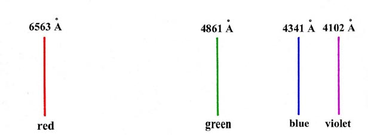

An Introduction to the Electronic Structure of Atoms
and Molecules
Dr. Richard F.W. Bader
Professor of Chemistry / McMaster University / Hamilton,
Ontario
|
Some Important Experiments with Electrons and Light
Certainly the early experiments on the properties
of electrons did not suggest that any unusual behaviour was to be expected.
Everything pointed to the electron being a particle of very small mass.
The trajectory of the electron can be followed in a device such as a Wilson
cloud chamber. Similarly, a beam of electrons generated by passing a current
between two electrodes in a glass tube from which the air has been partially
evacuated will cast the shadow of an obstacle placed in the path of the
beam. Finally, the particle nature of the electron was further evidenced
by the determination of its mass and charge.
Just as classical considerations placed electrons
in the realm of particles, the same classical considerations placed light
in the realm of waves with equal certainty. How can one explain diffraction
effects without invoking wave motion?
In the years from 1905 to 1928 a number of experiments
were performed which could be interpreted by classical mechanics
only
if it was assumed that electrons possessed a wave motion, and light was
composed of a stream of particles! Such dualistic descriptions, ascribing
both wave and particle characteristics to electrons or light, are impossible
in a physical sense. The electron must behave either as a particle or a
wave, but not both (assuming it is either). "Particle" and "wave" are both
concepts used by ordinary or classical mechanics and we see the paradox
which results when classical concepts are used in an attempt to describe
events on an atomic scale. We shall consider just a few of the important
experiments which gave rise to the classical explanation of dual behaviour
for the description of electrons and light, a description which must ultimately
be abandoned.
The Photoelectric Effect
Certain metals emit electrons when they are exposed
to a source of light. This is called the photoelectric effect. The pertinent
results of this experiment are
| i) |
The number of electrons released
from the surface increases as the intensity of he light is increased, but
the energies of the emitted electrons are independent of
the intensity of the light. |
| ii) |
No electrons are emitted from the surface of the metal unless the frequency
of the light is greater than a certain minimum value. When electrons are
ejected from the surface they exhibit a range of velocities, from zero
up to some maximum value. The energy of the electrons with
the maximum velocity is found to increase linearly with an increase in
the frequency of the incident light. |
The first result shows that light cannot be a wave motion
in the classical sense. As an analogy, consider waves of water striking
a beach and hitting a ball (in place of an electron) at the water's edge.
The intensity of a wave is proportional to the square of the amplitude
(or height) of the wave. Certainly, even when the frequency with which
the waves strike the beach remains constant, an increase in the amplitude
of the waves will cause much more energy to be released when they strike
the beach and hit the ball. Yet when light "waves" strike a substance only
the number of emitted electrons increases as the intensity is increased;
the energy of the most energetic electrons remains constant. This can be
explained only if it is assumed that the energy in a beam of light is not
transmitted in the manner characteristic of a wave, but rather that the
energy comes in bundles or packets and that the size of the packet is determined
by the frequency of the light. This explanation put forward by Einstein
in 1905 relates the energy to the frequency—and not to the
intensity of the light—as required by the experimental results. A packet
of light energy is called a photon. The results of the photoelectric experiment
show that the energy e
of a photon is directly proportional to the frequency n
of the light, or, calling the constant of proportionality h, we
have:
Since the electron is bound to the surface of the metal, the photon must
possess a certain minimum amount of energy, i.e., possess a certain minimum
frequency no,
just sufficient to free the electron from the metal. When an electron is
ejected from the surface by a photon with a frequency greater than this
minimum value, the energy of the photon in excess of the minimum amount
appears as kinetic energy of the electron. Thus:
where hn is the energy of the photon
with frequency n, and hno
is the energy of the photon which is just sufficient to free the electron
from the metal. Experimentally we can measure the kinetic energy of the
electrons as a function of the frequency n.
A plot of the kinetic energy versus the frequency gives a straight line
whose slope is equal to the value of h, the proportionality constant.
The value of h is found to be 6.6 ´
10-27 erg sec.
Equation (1) is revolutionary.
It states that the energy of a given frequency of light cannot be varied
continuously, (Click
here for note.) as would be the case classically, but
rather that it is fixed and comes in packets of a discrete size. The energy
of light is said to be quantized and a photon is one quantum (or bundle)
of energy.
It is tempting at this point, if we desire a classical
picture of what is happening, to consider each bundle of light energy,
that is, each photon, to be an actual particle. Then one photon, on striking
an individual electron, scatters the electron from the surface of the metal.
The energy originally in the photon is converted into the kinetic energy
of the electron (minus the energy required for the electron to escape from
the surface). This picture must not be taken literally, for then the diffraction
of light is inexplicable. Nor, however, can the wave picture for diffraction
be taken literally, for then the photoelectric effect is left unexplained.
In other words, light behaves in a different way from ordinary particles
and waves and requires a special description.
The constant h determines the size of the
light quantum. It is termed Planck's constant in honour of the man who
first postulated that energy is not a continuously variable quantity, but
occurs only in packets of a discrete size. Planck proposed this postulate
in 1901 as a result of a study of the manner in which energy is distributed
as a function of the frequency of the light emitted by an incandescent
body. Planck was forced to assume that the energies of the oscillations
of the electrons in the incandescent matter, which are responsible for
the emission of the light, were quantized. Only in this way could he provide
a theoretical explanation of the experimental results. There was a great
reluctance on the part of scientists at that time to believe that
Planck's revolutionary postulate was anything more than a mathematical
device, or that it represented a result of general applicability in atomic
physics. Einstein's discovery that Planck's hypothesis provided an explanation
of the photoelectric effect as well indicated that the quantization of
energy was indeed a concept of great physical significance. Further examples
of the quantization of energy were soon forthcoming, some of which are
discussed below.
The Diffraction of Electrons
Just as we have found dualistic properties for light
when its properties are considered in terms of classical mechanics,
so we find the same dualism for electrons. From the early experiments on
electrons it was concluded that they were particles. However, a beam of
electrons, when passed through a suitable grating, gives a diffraction
pattern entirely analogous to that obtained in diffraction experiments
with light. In other words, not only do electrons and light both appear
to behave in completely different and strange ways when considered in terms
of our everyday physics, they both appear to behave in the same way! Actually,
the same strange behaviour can be observed for protons and neutrons. All
the fundamental particles and light exhibit behaviour which leads to conflicting
conclusions when classical mechanics is used to interpret the experimental
findings.
The diffraction experiment with electrons was carried
out at the suggestion of de Broglie. In 1923 de Broglie reasoned that a
relationship should exist between the "particle" and "wave" properties
for light. If light is a stream of particles, they must possess momentum.
He applied to the energy of the photon Einstein's equation for the equivalence
between mass and energy:
where c is the velocity of light and m is the mass of the
photon. Thus the momentum of the photon is mc and:
If light is a wave motion, then of course it possesses a characteristic
frequency n and wavelength l
which are related by the equation:
The frequency and wavelength may be related to the energy of the photon by
using Einstein's famous relationship:
By equating the two expressions for the energy:
de Broglie obtained the following relationship which bears his name:
However, de Broglie did not stop here. It was he who reasoned that light
and electrons might behave in the same way. Thus a beam of electrons, each
of mass m and with a velocity u
(and hence a momentum mu) should exhibit
diffraction effects with an apparent wavelength:
Using de Broglie's relationship, we can calculate that an electron with
a velocity of 1 ´
109
cm/sec should have a wavelength of approximately 1 x
10-8 cm. This is just the order of magnitude of the spacings
between atoms in a crystal lattice. Thus a crystal can be used as a diffraction
grating for electrons. In 1927 Davisson and Germer carried out this very
experiment and verified de Broglie's prediction. (See Problem 1 at the
end of this section.)
Line Spectra
A gas will emit light when an electrical discharge
is passed through it. The light may be produced by applying a large voltage
across a glass tube containing a gas at a low pressure and fitted with
electrodes at each end. A neon sign is an example of such a "discharge
tube." The electrons flowing through the tube transfer some of their energy
to the electrons of the gaseous atoms. When the atomic electrons lose this
extra energy and return to their normal state in the atom the excess energy
is emitted in the form of light. Thus the gaseous atoms serve to transform
electrical energy into the energy of light. The puzzling feature of the
emitted light is that when it is passed through a diffraction grating (or
a prism) to separate the light according to its wavelength, only certain
wavelengths appear in the spectrum. Each wavelength appears in the spectrum
as a single narrow line of coloured light, the line resulting from the
fact that the emitted light is passed through a narrow slit (thus producing
a thin "line" of light) before striking the grating or the prism and being
diffracted. Thus a "line" spectrum rather than a continuous spectrum is
obtained when atomic electrons are excited by an electrical discharge.
An example of such a spectrum is given in Fig.
1-1, which illustrates the visible spectrum observed for the hydrogen
atom. This spectrum should be contrasted with the more usual continuous
spectrum obtained from a source of white light which consists of a continuous
band of colours ranging from red at the long wavelength end to violet at
short wavelengths.

Fig. 1-1. The visible spectrum for hydrogen atoms
(1Å = 1 Ångstrom = 1 ´ 10-8
cm)
The energy lost by an electron as it is attracted
by the nucleus appears in the form of light. If all energies were possible
for an electron when bound to an atom, all wavelengths or frequencies should
appear in its emission spectrum, i.e., a continuous spectrum should be
observed. The fact that only certain lines appear implies that only certain
values for the energy of the electron are possible or allowed. We could
describe this by assuming that the energy of an electron bound to an atom
is quantized. The electron can then lose energy only in fixed amounts corresponding
to the difference in value between two of the allowed or quantized energy
values of the atom. Since the energy of a photon is given by
and e must correspond to the difference between
two of the allowed energy values for the electron, say E and E'
{E' > E), then the value of the corresponding frequency for
the photon will be given by
Obviously, if only certain values of E are allowed, only certain
values of e or n
will be observed, and a line spectrum rather than a continuous spectrum
(which contains all values of n) will
be observed.
Equation (4)
was put forward by Bohr in 1913 and is known as Bohr's frequency condition.
It was Bohr who first suggested that atomic line spectra could be accounted
for if we assume that the energy of the electron bound to an atom is quantized.
Thus the parallelism between the properties of light and electrons is complete.
Both exhibit the wave-particle dualism and the energies of both are quantized.
The Compton Effect
The results of one more experiment will play an
important role in our discussions of the nature of electrons bound to an
atom. The experiment concerns the direct interaction of a photon and an
electron.
In order to determine the position of an object we
must somehow "see" it. This is done by reflecting or scattering light
from the object to the observer's eyes. However, when observing an object
as small as the electron we must consider the interaction of an individual
photon with an individual electron. It is found experimentally—and this
is the Compton effect—that when a photon is scattered by an electron, the
frequency of the emergent photon is lower than it was before the scattering.
Since e = hn,
and n is observed to decrease, some of
the photon's energy has been transmitted to the electron. If the electron
was initially free, the loss in the energy of the photon would appear as
kinetic energy of the electron. From the law of conservation of energy,
where n' is the frequency of the photon
after collision with the electron. This experiment brings forth a very
important effect in the making of observations on the atomic level. We
cannot make an observation on an object without at the same time disturbing
the object. Obviously, the electron receives a kick from the photon during
the observation. While it is possible to determine the amount of energy
given to the electron by measuring n
and n', we cannot however, predict in
advance the final momentum of the electron. A knowledge of the momentum
requires a knowledge of the direction in which the electron is scattered
after the collision and while this can be measured experimentally one cannot
predict the outcome of any given encounter. We shall illustrate later,
with the aid of a definite example, that information regarding both the
position and the momentum of an electron cannot be obtained with unlimited
accuracy. For the moment, all we wish to draw from this experiment is that
we must be prepared to accept a degree of uncertainty in the events we
observe on the atomic level. The interaction of the observer with the system
he is observing can be ignored in classical mechanics where the masses
are relatively large. This is not true on the atomic level as here the
"tools" employed to make the observation necessarily have masses and energies
comparable to those of the system we are observing.
In 1926 Schrodinger, inspired by the concept of de Broglie's
"matter waves," formulated an equation whose role in solving problems in
atomic physic's corresponds to that played by Newton's equation of motion
in classical physics. This single equation will correctly predict all physical
behaviour, including, for example, the experiments with electrons and light
discussed above. Quantization follows automatically from this equation,
now called Schrodinger's equation, and its solution yields all of the physical
information which can be known about a given system. Schrodinger's equation
forms the basis of quantum mechanics and as far as is known today the solutions
to all of the problems of chemistry are contained within the framework
of this new mechanics. We shall in the remainder of this site concern ourselves
with the behaviour of electrons in atoms and molecules as predicted and
interpreted by quantum mechanics.